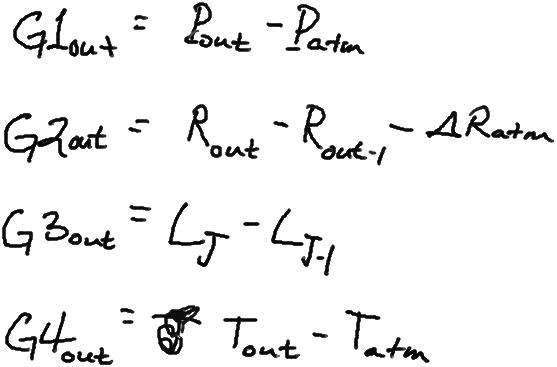

Date & Time: Oct. 19, 2012
Location: campus
Computing context: MachoMac
(/Desktop/Research/CppHenyeyCode/src, /Desktop/Research/BodenheimerCode/UnalteredCode)
From last time:
...I'm pretty sure this boils down to how the outermost G values are calculated, which in turn depends on how the atmospheric P/T/R/rho values are getting calculated. Debugging my atmos subroutine is probably going to be a long, involved, gnarly process that will drag on for about another month.
Still to do:
Still need to fix the problem w/ the G values disagreeing at the outermost boundary
To Do Today:
G-debugging, in more detail:
So, it looks like I just need to get the P R and T values out at the outer boundary, and then also at the inner edge of the atmos (?) and I Should be able to compare Peter Is c ode w/ my own, and thereby at Least debug what is going on w/ Helena @ the outer boundary
Although, I'm kind of unsure of of whether getting the exact same Pl T/R/ rho Values that Peter does at the outer boundary is going to let Helena calculate the same dX profiles Mat Peter's code does b/c when I just set the Outer G values to what he got, I didn't end up w/ the same dX profiles that his code did
Though that might well be b/c I didn't also reset the outer most D matrix values to what he'd gotten and those depend not just on how those P,T, and Ratm values are (or the accuracy thereof) but also on how those values are being found to change w/ respect to the outer boundary conds being fed to the atmos subroutine
This, in turn, suggests that not only is my atmos subroutine getting the wrong atmos values, but that it 's also somehow getting the way that the atmos variables couple to and depend upon each other wrong... which surely must be due to the way I coded my Rk4 algorithm in the first place (oh no...)
[done] Check that the non-zero D values that Peter's code is putting out aren't happening in spots where the derivatives should be zero (i.e., derivatives wrt T and P at the outer boundary)
--> That seems fine in both the Helena and Peter outermost D matrix values. The issue is the difference in the non-zero values, which differ by ~ 1 order of magnitude (the Helena values are smaller than the Peter ones).
[done] Get Peter's code to write out the atmos vars (T,P,R) at the following points:
[done] Just the regular outer boundary, before any of the outer boundary values get changed
[done] Outer boundary with *just* the Router value varied
[done] Outer boundary with *just* Louter value varied
[] Outer
boundary with *just* Touter value varied
[] Outer
boundary with *just* Pouter value varied
The two crossed out ones are not possible in calls to the atmos subroutine w/in Peter's code. Tried changing the outermost P and T values before calling the atmos subroutine. Doing so does not change the R/T/P/rho-atm values at all.
The results from the other items are saved in /Oct_19_2012/Peter_atmos_values.odt, and are (partially) color-coded to help me figure out where in the atmos the various values are defined.
[done] Do the same w/ the Helena code
Results saved in /Oct_19_2012/Helena_atmos_results.odt.
[done] Run the Helena atmos stuff with the same L and R input values that were fed to each of the Peter cases, for a clear comparison
Results also saved in /Oct_19_2012/Helena_atmos_results.odt.
The results of these print-outs are displayed in the table below:
|
|
Results from the Helena 10Mjup, no fusion model, atmospheric values: |
Results from the Helena: atmospheric values, from the Peter-supplied values: |
Results from Peter's atmos subroutine: |
|---|---|---|---|
|
Atmos values: before any inputs get changed: |
Pout = 1.66993e+08 Rout = 8.75421e+10 Lout = 1.40224e+32 Tout = 12161.2 --------------------- Patm = 1.46546e+08 Tatm = 7533.33 Ratm = 1.11869e+10 ---------------------- First (outermost) atmos values: P = 81.2677 T = 1893.63 rho = 1.18294e-09 kappa = 0.0018962 ----------------------
|
Pout = 1.66993e+08 Rout = 8.75421e+10 Lout = 1.40224e+32 Tout = 12161.2 ---------------------- Patm = 1.46546e+08 Tatm = 7533.33 Ratm = 1.11869e+10 ---------------------- First (outermost) atmos values: P = 81.2677 T = 1893.63 rho = 1.18294e-09 kappa = 0.0018962 ----------------------
|
(inputs) Zmass= 1.748663683671694E+031 Pout = 166993483.387042 Rout = 87542104809.4471 Lout = 1.402235808868283E+032 Tout = 1.402235808868283E+032 (outputs) First values of: P= 8.7966E+01 RHO= 1.2812E-09 T= 1.8933E+03 AKM= 1.9530E-03 Atmospheric Parameters: T= 1.22E+04 R= 1.50E+10 P= 1.67E+08 RHO= 2.13E-04 Stellar Parameters: T= 2.25E+03 R= 8.75E+10 L= 1.40E+32 |
|
Atmos values with R varied |
Pout = 1.66993e+08 Rout = 8.75859e+10 Lout = 1.40224e+32 Tout = 12161.2 ---------------------- Patm = 1.46605e+08 Tatm = 7531.27 Ratm = 1.11951e+10 ---------------------- First (outermost) atmos values: P = 81.4052 T = 1893.15 rho = 1.18531e-09 kappa = 0.00189106 ---------------------- |
Pout = 1.66993e+08 Rout = 8.79798e+10 Lout = 1.40224e+32 Tout = 12161.2 ---------------------- Patm = 1.43102e+08 Tatm = 7461.85 Ratm = 1.12059e+10 ---------------------- First (outermost) atmos values: P = 82.6592 T = 1888.91 rho = 1.20717e-09 kappa = 0.00184538 ----------------------
|
(inputs) Pout = 166993483.387042 Rout = 87979815323.7107 Lout = 1.402235808868283E+032 Tout = 1.402235808868283E+032
(outputs) First values of: P = 8.9239E+01 RHO = 1.3040E-09 T = 1.8886E+03 AKM = 1.9025E-03 Atmospheric Parameters: Tatm = 11930.8659605887 Rhoatm = 2.115572669503067E-004 Ratm = 14954723622.7242 Patm = 162772825.885528 Stellar Parameters: T= 2.25E+03 R= 8.80E+10 L= 1.40E+32 |
|
Atmos values with L varied |
Pout = 1.66993e+08 Rout = 8.75421e+10 Lout = 1.40294e+32 Tout = 12161.2 ---------------------- Patm = 1.46475e+08 Tatm = 7534.33 Ratm = 1.11881e+10 ---------------------- First (outermost) atmos values: P = 81.171 T = 1893.86 rho = 1.18134e-09 kappa = 0.00189848 ----------------------
|
Pout = 1.66993e+08 Rout = 8.75421e+10 Lout = 1.40925e+32 Tout = 12161.2 ---------------------- Patm = 1.4685e+08 Tatm = 7556.32 Ratm = 1.12149e+10 ---------------------- First atmos values: P = 80.3151 T = 1895.99 rho = 1.16714e-09 kappa = 0.00191897 ---------------------- |
(inputs) Pout = 166993483.387042 Rout = 87542104809.4471 Lout = 1.409246987755913E+032 Tout = 1.402235808868283E+032 (outputs) First values of: P = 8.7055E+01 RHO = 1.2658E-09 T = 1.8956E+03 AKM = 1.9761E-03 Atmospheric Parameters: Tatm = 12282.8685099036 Rhoatm = 2.112800701284692E-004 Ratm = 15149478351.8969 Patm = 167698890.222631 Stellar Parameters: T= 2.25E+03 R= 8.75E+10 L= 1.41E+32 |
[] Calculate the outer G values and the D values for both Peter & Helena by hand, based on the numbers you get out in the previous steps.

Eqn.
1
|
|
|
Results from the Helena 10Mjup, no fusion model, atmospheric values: |
Results from the Helena: atmospheric values, from the Peter-supplied values: |
|
Atmos values: before any inputs get changed: |
Outer G values, calculated by hand |
G1: 2.0487e7 G2: ?? (Need Rout-1 to calc. this) G3: ?? (Need Lout-1 to calc. this) G4: 4627.77 |
|
|
Outer D values, calculated by hand |
|
|
Finish filling out and constructing this table (above) tomorrow.
Notes on progress/ideas/to-do for the Amazon Web Service elastic computing thing:
The issues I'm currently trying to sort out w/ Hadoop are as follows:
1) Hadoop, by itself, Only takes map and reduce functions written in Java. However, Java is Hard. Also, more importantly, most scientific codes are *not* written in Java, or in *any* scripting language for that matter. So, how to get Hadoop to use one of those codes as its 'map' function?
2) you can start to get around that problem by using Hadoop streaming, which takes *any* executable programs in the "map" and "reduce" Slots . So, if you have program.cpp that Compiles to the executable myProgram, you could specify myProgram as your "map" function.
However, this still requires that ALL the inputs to myProgram come from the command line. In the case of Helena, and many other Scientific computing codes, the program needs to read in MUCH more than just a few parameter values in order to do its task. For instance, Helena needs to read in an entire file of data to start its initial model . In addition, it needs to read in several files containing the E0S look-up table values. So, the question is: --> How do you pass along the input files that your executable needs w/ the function call to myProgram? (I've Seen some mention of zipping up the external files & passing that single .gz file along w/ the Hadoop map - reduce call, but I'm not entirely sure how that works, Or whether passing copies of all those extra files, zipped or not, will end up making the process too Computationally or memoy-usage-ly intensive.
2.5) scientific programs usually create entire files of output (sometimes several per individual Simulation run). Is it possible to pass those *files* as inputs to the "reduce" function? Does a single processor handle all of the outputs from a Single map shard process? Or is there no way of knowing which Set of input data generated any of the items reduce is acting on? This is important to figure Out, b/c your simulation results mean NOTHING if you don't know what inputs to use to reproduce them.
3) For right how, I don't think We need to worry about supplying a " reduce " function that does anything. In the future, you might see whether the reduce fuction is the appropriate place to do basic data parsing and analysis. Grouping results by keyword value pairs - which is how the reduce function basically works, may make figuring out how to translate my analysis Scripts to "reduce" - functional form kind of tricky.
4) In order to start testing any of this stuff out, I need to be able to RUN Hadoop on some machine.
A) First, need to be able to run Hadoop Locally, as a single - node cluster on my own machine.
B) If there is some way of getting my single, local machine to impersonate a cluster of multiple nodes, have it do that (BUT HOW?!) and run the Hadoop map - reduce process locally.
C) Once I can get this working and debugged on my local machine, where computing time is free, try getting it to work on the Amazon cloud servers. ( It sucks that their EMR framework doesn't let you use the free micro - instances to form your virtual cluster, b/c I just know I'm going to end up burning thru a lot of non - free computing hours on there, which are coming out of my own rather shallow grad student pockets for the time being )